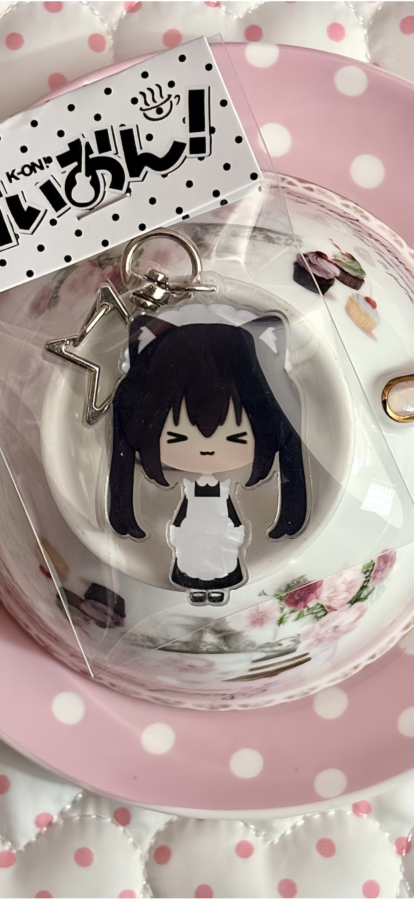

小纸条
每个人都会有自己的开心基线，但你也可以一点点把它找回来。
jiangjiang to xiaohuoguo
这是一封神秘的礼物~ (＾＿~)
jiangjiang presents
这是一个突然闯进你手机的小网站。是江江在这里轻轻提醒你： 你不是一个需要被修好的问题，你是一个可爱的小bb，在春天会很好的小bb~

今天的体感
温度 3 / 5
今天就先不用逼自己发光，能稳稳地待着也很厉害。
江江留言机
小纸条
每个人都会有自己的开心基线，但你也可以一点点把它找回来。
轻轻放下
暖暖留声机
暖暖留声机
向更远一点的地方去
穿过云，也穿过今天的低气压
把重重的壳先轻轻放下
然后慢慢回到，小火锅自己的光里